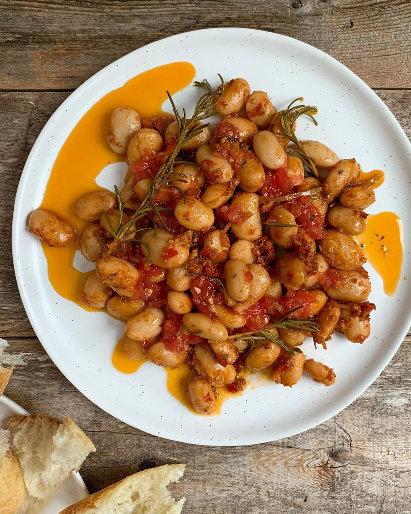

|OTK Bean Dish|

Description
This is the first recipe Jerri and I attempted from the Ottolenghi
cookbook titled "Shelf Love". To an inexperienced home cook (IE: me)
this recipe can seem intimidating and unappealing from a glance, however
not only did we find this recipe easy to make, but it turned out to be so
delicious we began including it as one of our go-to weekday meals.
Special notes: we found the preserved lemons to be particularly difficult
to source, and using fresh lemon peel seemed to work nearly as well. We will
usually pair this dish with lemon fried fish
Ingredients
- 5 garlic cloves, peeled + finely chopped
- 2 mild red chillies, finely chopped, seeds and all (30g net weight)
- 1 tbsp coriander seeds, finely crushed in a mortar
- 3 preserved lemons(80g), inner parts discarded + skin finely sliced (45g)
- 1½ tbsp picked thyme leaves, roughly chopped
- 4 rosemary sprigs
- 175ml olive oil
- 2 large vine tomatoes (220g), roughly grated and skins discarded (120g)
- Butter Beans (or 2 x 400g tins)
Recipe
- Put the first eight ingredients and a quarter-teaspoon of flaked salt in a
medium saute pan on a medium-low heat.
- Stir everything together and heat gently for 25 minutes, until very fragrant
but not at all coloured (if the oil gets too hot, turn the heat down low).
- Stir in the butter beans, turn the heat up to medium and cook for 10 minutes,
until the oil just starts to bubble. Turn off the heat and leave to infuse
for at least an hour, and preferably overnight.
- Meanwhile, mix the grated tomato with half a teaspoon of flaked salt and a
good grind of pepper. **This takes about 10 seconds to prepare, so don't
bother until you're about to eat
- Pour the butter bean mixture into a shallow bowl, spoon over the grated
tomato, mixing it in a little in places, and serve at room temperature.